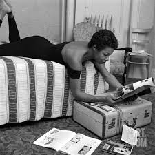

Maya Angelou

The Life and Times
Born Marguerite Annie Johnson in April 4th, 1928
Published & autobiographies, three books of essays, several books of poetry
Received many awards and held more than 50 honorary degrees
She worked as a cook, sex worker, nightclub performer, Porgy and Bess cast member, Southern Christian Leadership Conference coordinator, and correspondent in Eqypt and Ghana.
Actress, writer, director, and producer of plays, movies and television programs
Known in writing for challenging the common structure of autobiography
Her works centered on themes about racism, identity, family and travel
died May 28th, 2014
